Cha Hae-in
Cha Hae-In, frequentemente chamada simplesmente de Cha por seus amigos, é a primeira personagem lançada junto com o lançamento global do jogo. Ela é uma DPS baseada em Crit que se destaca em janelas de burst curtas e frequentes de dano extremamente alto, tornando-a uma presença formidável em quase todos os aspectos do jogo. O kit inteiro de Cha gira em torno de sua primeira habilidade, [The Dancer]. Essa habilidade, ao acertar um acerto crítico, permite que ela encadeie o ataque quantas vezes a animação permitir dentro de uma janela de 3 segundos. A habilidade também aplica um debuff em qualquer inimigo atingido, aumentando a chance de eles receberem um acerto crítico e aumentando o dano de acertos críticos de toda a equipe. Além disso, Cha ganha buffs de Ataque e Dano Crítico acumuláveis, configurando-a de forma ideal para suas outras habilidades. Suas outras habilidades, embora mais diretas, ainda são impactantes. [Sword of Light] inflige um debuff Irrecuperável, impedindo que qualquer inimigo atingido se cure por 30 segundos. Sua habilidade suprema, [Light of the End], é um finalizador de combo devastador que causa dano massivo quando o inimigo é totalmente debuffado e Cha é buffado com suas habilidades anteriores. Avançar Cha reforça essas sinergias, com cada avanço aumentando seu dano ou taxa de Crit. Essa progressão transforma Cha de um DPS/Burst Hybrid em uma enorme máquina nuclear, com seu A5 potencialmente dobrando o poder de seu Ultimate.
- Taxa de Crítico
- Dano Crítico
- Dano de Luz
- Ataque
- Couro Duro (4 peças)
- Especialista (4 peças)